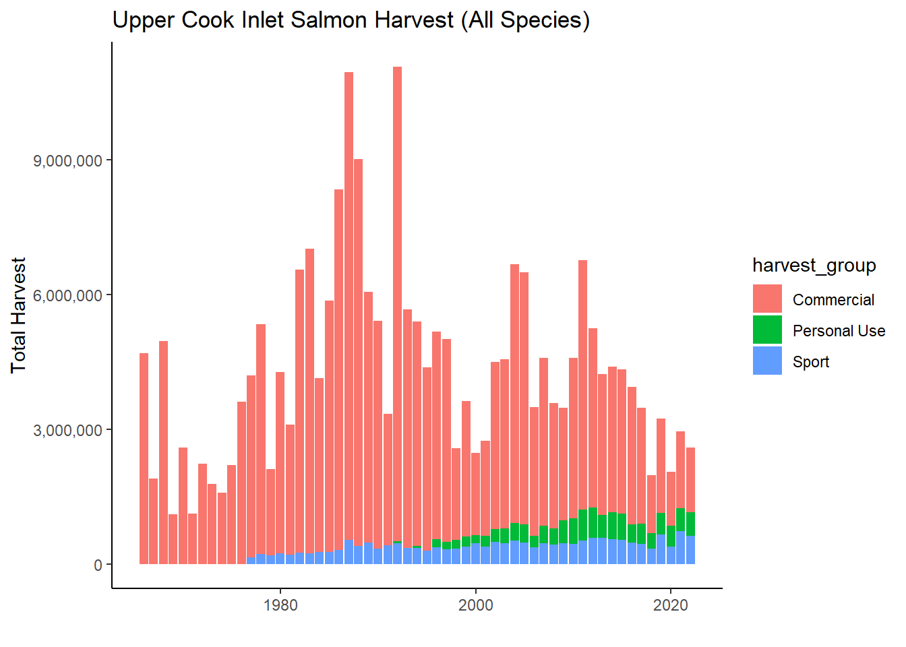

Note on data sources for Northern Kenai Peninsula Fisheries Harvest, from Schoen et al. 2017 supplemental materials:
“Harvest and effort data are reported differently for the commercial, recreational, and personal-use fisheries in Upper Cook Inlet, such that it is not possible to calculate the harvest and effort of salmon produced specifically by the Kenai River (including its tributaries) by each fishing sector. To make comparisons within a common geographic area, we aggregated harvest and effort data from the northern Kenai Peninsula, ranging from the Kasilof River in the south to Ingram Creek in the north. The Kenai River is the predominant salmon-producing river in this area.
We aggregated harvest and effort data from the following fisheries:
Commercial: Central District drift gill net and east-side set gill net (Shields and Dupuis 2016);
Recreational: Northern Kenai Peninsula Management Area (Begich et al. 2013);
Personal-use: Kenai River dip net, Kasilof River dip net, and Kasilof River set net (Fall et al. 2015; Shields and Dupuis 2016). ADF&G also reports harvest and effort for an “unknown” personal-use fishery in Upper Cook Inlet. This harvest and effort was reported on permits on which the fishery was left blank. We allocated this harvest and effort to each known fishery based on the proportions of accurately reported harvest and effort in each year.”
Read in data
`summarise()` has grouped output by 'species'. You can override using the
`.groups` argument.
`summarise()` has grouped output by 'species'. You can override using the
`.groups` argument.
`summarise()` has grouped output by 'species'. You can override using the
`.groups` argument.
`summarise()` has grouped output by 'year'. You can override using the
`.groups` argument.
plots
Warning: Removed 13 rows containing missing values or values outside the scale range
(`geom_bar()`).

Commercial Harvest
Personal Use Harvest
Joining with `by = join_by(year, harvest_group)`
Warning: Using `size` aesthetic for lines was deprecated in ggplot2 3.4.0.
ℹ Please use `linewidth` instead.
Warning: Removed 61 rows containing missing values or values outside the scale range
(`geom_bar()`).
Warning: Removed 80 rows containing missing values or values outside the scale range
(`geom_line()`).
Sport Harvest
Scale for y is already present.
Adding another scale for y, which will replace the existing scale.
Joining with `by = join_by(year)`
Scale for y is already present.
Adding another scale for y, which will replace the existing scale.
Warning: Removed 6 rows containing missing values or values outside the scale range
(`geom_bar()`).
Next:
find commercial effort data
plot as horizontal facet grid w/o effort (read in all data at start; combine dfs)
Idea for NEW overall fig - stacked bar plot of harvest by fishery (& sub stack by species?) superimposed with total harvest … can visualize remaining escapement in context of harvest. –> might be hard to do becuase the above figures do not include solely kenai fish
step 1: recreate fig as is
step 2: show proportional sizes of figs in context of comm
step 3: show stacked proportion by fishery by year
place citations/sources for data below each plot
See p 91 in lipka & stumpf 2024, all uci sockeye harvests combined
plan - draft for sport and pu; send to anna, as for effort data for comm
Source Code
# UCI Salmon Fishery Data Sources {.unnumbered}---execute: echo: falsedate: "`r Sys.Date()`"format: html: code-fold: true code-tools: true code-summary: "Show the code"---```{r, echo = F, message = F}#| warning: false#| message: false# clear environmentrm(list=ls())# load packageslibrary(tidyverse)library(janitor)library(scales)library(magrittr)```# Data Sources```{r echo = F}# harvest trends datasets 1966-2015# https://catalog.epscor.alaska.edu/dataset/commercial-recreational-and-personal-use-harvest-trends-in-the-kenai-river-salmon-fishery-1966-2015# overall run trends datasets 1976-2015# https://catalog.epscor.alaska.edu/dataset/total-run-sizes-of-chinook-and-sockeye-salmon-in-the-kenai-river-1976-2015```Note on data sources for Northern Kenai Peninsula Fisheries Harvest, from Schoen et al. 2017 supplemental materials:"Harvest and effort data are reported differently for the commercial, recreational, and personal-use fisheries in Upper Cook Inlet, such that it is not possible to calculate the harvest and effort of salmon produced specifically by the Kenai River (including its tributaries) by each fishing sector. To make comparisons within a common geographic area, we aggregated harvest and effort data from the northern Kenai Peninsula, ranging from the Kasilof River in the south to Ingram Creek in the north. The Kenai River is the predominant salmon-producing river in this area.We aggregated harvest and effort data from the following fisheries:- Commercial: Central District drift gill net and east-side set gill net (Shields and Dupuis 2016);- Recreational: Northern Kenai Peninsula Management Area (Begich et al. 2013);- Personal-use: Kenai River dip net, Kasilof River dip net, and Kasilof River set net (Fall et al. 2015; Shields and Dupuis 2016). ADF&G also reports harvest and effort for an “unknown” personal-use fishery in Upper Cook Inlet. This harvest and effort was reported on permits on which the fishery was left blank. We allocated this harvest and effort to each known fishery based on the proportions of accurately reported harvest and effort in each year."<br>## Read in data```{r echo = F}### commercial# read in comm fish datadir <-"other/input/harvest_trends/uci-commercial-salmon-harvest.csv"uci_comm <-read.csv(dir) %>%clean_names() %>%# remove percentage columnsselect(-contains(("_2"))) %>%pivot_longer(cols =c("drift","essn","wssn","nsn"), names_to ="fishery", values_to ="count") %>%# consolidate counts from various fisheriesgroup_by(species,year) %>%summarise(total_count =sum(count)) %>%mutate(harvest_group ="Commercial") %>%transform(year =as.character(year))# the commercial harvest time series is the longest, so we will make that the axis extent for the other figures toocomm_year_min <-as.numeric(min(uci_comm$year))comm_year_max <-as.numeric(max(uci_comm$year))#################### personal use# read in pre 1996 PUdir <-"other/input/harvest_trends/puharvest_pre1996.csv"puharvest_pre1996 <-read.csv(dir) %>%clean_names() %>%# prep formatpivot_longer(cols =c("harvest_sockeye","harvest_chinook","harvest_coho","harvest_chum","harvest_pink"), names_to ="species", values_to ="count") %>%select(-harvest_total) %>%# corrected species namesmutate(species =case_when( species =="harvest_sockeye"~"Sockeye", species =="harvest_chinook"~"Chinook", species =="harvest_chum"~"Chum", species =="harvest_pink"~"Pink", species =="harvest_coho"~"Coho")) %>%# consolidate data among fisheries, as the figure does not segregate themgroup_by(species, year) %>%summarise(total_count =sum(count)) %>%transform(year =as.character(year))# read in post 1996 PUdir <-"other/input/harvest_trends/puharvest_post1996.csv"puharvest_post1996 <-read.csv(dir) %>%clean_names() %>%select(-source,-page) %>%# remove commasmutate_all(~sub(",","",.)) %>%# prep formatpivot_longer(cols =c("fish_cr","kasilof_set","kasilof_dip","kenai","unknown"), names_to ="fishery", values_to ="count") %>%transform(count =as.numeric(count)) %>%select(-fishery) %>%# replace all 0 with NAmutate(count =na_if(count,0)) %>%group_by(species, year) %>%# recall to include na.rm = Tsummarise(total_count =sum(count, na.rm = T)) # combine pre-1996 and post-1996 PU datauci_pu <-bind_rows(puharvest_pre1996,puharvest_post1996) %>%mutate(harvest_group ="Personal Use") ############ sport# read in uci sport fish datadir <-"other/input/harvest_trends/sportharvest.csv"uci_sport <-read.csv(dir) %>%clean_names() %>%select(contains(c("year","area","salmon","trout","dolly","grayling","pike","other"))) %>%# consolidate all non-salmon species into "other"rowwise() %>%mutate(other =sum(rainbow_trout, lake_trout, dolly_varden, arctic_grayling, northern_pike, other,na.rm = T)) %>%# remove non-salmon species columnsselect(-rainbow_trout, -lake_trout, -dolly_varden,-arctic_grayling,-northern_pike) %>%pivot_longer(cols =contains(c("salmon","other")),names_to ="species",values_to ="count") %>%# consolidate counts from various fisheries into overall sport fisherygroup_by(year,species) %>%summarise(total_count =sum(count)) %>%# fix species namesmutate(species =case_when( species =="chinook_salmon"~"Chinook", species =="chum_salmon"~"Chum", species =="coho_salmon"~"Coho", species =="pink_salmon"~"Pink", species =="sockeye_salmon"~"Sockeye", species =="other"~"Other")) %>%# name user groupmutate(harvest_group ="Sport") %>%transform(year =as.character(year))#### combine commercial, PU, and sport into single dataframe# combine dataframes for comm, pu, and sportdat <-bind_rows(uci_comm, uci_pu, uci_sport)```# plots```{r echo = F, message = F}# horizontal faceted plotdat %>%transform(year =as.numeric(year)) %>%filter(year <2023) %>%group_by(year,harvest_group) %>%summarise(total_harvest =sum(total_count)) %>%ggplot() +geom_bar(aes(x = year, y = total_harvest, fill = harvest_group), stat ="identity") +scale_y_continuous(labels =label_comma()) +theme_classic() +xlab("") +ylab("Total Harvest") +ggtitle("Upper Cook Inlet Salmon Harvest (All Species)") # report/include numbers for educational / traditional use; make point not big enough to plot here# plots of value / size```## Commercial Harvest```{r echo = F}# comm plotcomm_fig <- uci_comm %>%ggplot() +geom_bar(aes(x =as.numeric(year), y = total_count, fill = species), stat ="identity", position =position_stack(reverse = T)) +scale_y_continuous(labels =label_comma()) +xlab("") +ylab("Commercial Harvest") +theme_classic() +ggtitle("Upper Cook Inlet Commercial Harvest")comm_fig# need clarification on and source for effort: number of permits fished. where; both setnet and drift?? check against shields and dupuis and find parallel in lipke & stumpf 2024```<br>## Personal Use Harvest```{r echo = F}# PU plotpu_fig <- uci_pu %>%filter(species !="HouseholdDaysFished") %>%ggplot() +geom_bar(aes(x =as.numeric(year), y = total_count, fill = species), stat ="identity", position =position_stack(reverse = T)) +scale_y_continuous(labels =label_comma()) +xlab("") +ylab("Personal Use Harvest") +xlim(comm_year_min,comm_year_max) +theme_classic()#pu_fig# add secondary axis# 1) get effort data in new columnuci_pu2 <- uci_pu %>%filter(species =="HouseholdDaysFished") %>%select(-species)colnames(uci_pu2) <-c("year","household_days_fished","harvest_group")uci_pu2 <-left_join(uci_pu,uci_pu2) %>%filter(species !="HouseholdDaysFished")# 2) plot PU fig v2# PU plotscale_factor <-16pu_fig2 <- uci_pu2 %>%filter(species !="HouseholdDaysFished") %>%ggplot() +geom_bar(aes(x =as.numeric(year), y = total_count, fill = species), stat ="identity", position =position_stack(reverse = T)) +geom_line(aes(x =as.numeric(year), y = household_days_fished * scale_factor), color ="black", size =1.05) +scale_y_continuous(name ="Personal Use Harvest", sec.axis =sec_axis(~ ., labels =number_format(scale=1/scale_factor), name="Effort (Household Days Fished)"),labels = comma) +xlab("") +ylab("Personal Use Harvest") +xlim(comm_year_min,comm_year_max) +theme_classic() +ggtitle("Northern Kenai Peninsula Personal Use Salmon Fishery")pu_fig2# capitalize legend# reverse stack order# match colors# see how this looks as a faceted plot with effort on top ?```<br>## Sport Harvest```{r echo = F}# sport plotsport_fig <- uci_sport %>%ggplot() +geom_bar(aes(x =as.numeric(year), y = total_count, fill = species), stat ="identity",position =position_stack(reverse = T)) +scale_y_continuous(labels = comma) +xlab("") +ylab("Sport Harvest") +xlim(comm_year_min,comm_year_max) +ylim(0,800000) +theme_classic()#sport_fig# plot sport v2 with effort# add effort datasport_effort <-read.csv("other/input/harvest_trends/sportharvest_effort.csv") %>%clean_names() %>%select(year,kenai_river_total) %>%rename(angler_days = kenai_river_total) %>%# remove commasmutate_all(~sub(",","",.)) %>%transform(angler_days =as.numeric(angler_days),year =as.character(year))# joinuci_sport2 <-left_join(uci_sport,sport_effort)# plotscale_factor <-2sport_fig2 <- uci_sport2 %>%ggplot() +geom_bar(aes(x =as.numeric(year), y = total_count, fill = species), stat ="identity", position =position_stack(reverse = T)) +geom_line(aes(x =as.numeric(year), y = angler_days * scale_factor), color ="black", size =1.05) +scale_y_continuous(name ="Sport Harvest", sec.axis =sec_axis(~ ., labels =number_format(scale=1/scale_factor), name="Effort (Angler Days)"),labels = comma) +xlab("") +ylab("Sport Harvest") +xlim(comm_year_min,comm_year_max) +scale_y_continuous(labels =label_comma()) +theme_classic() +ggtitle("Upper Cook Inlet Freshwater Sport Fisheries")sport_fig2```Next:- find commercial effort data- plot as horizontal facet grid w/o effort (read in all data at start; combine dfs)Idea for NEW overall fig - stacked bar plot of harvest by fishery (& sub stack by species?) superimposed with total harvest ... can visualize remaining escapement in context of harvest. --> might be hard to do becuase the above figures do not include solely kenai fish- step 1: recreate fig as is- step 2: show proportional sizes of figs in context of comm- step 3: show stacked proportion by fishery by year- place citations/sources for data below each plotSee p 91 in lipka & stumpf 2024, all uci sockeye harvests combinedplan - draft for sport and pu; send to anna, as for effort data for comm